变换(Transformation)
变换分为两种：Modeling（平移、旋转、缩放等）和 Viewing（3D 投影到 2D）
模型变换(Modeling)
先讨论二维的情况。
在二维平面图上，所有的 modeling 都是基于原点 \((0, 0)\) 的。
缩放(Scale)
对于原图像上任意一个点 \((x, y)\)，其缩放后的坐标为 \((x', y') = (s_x·x, s_y·y)\)。其中 \(s_x, s_y\) 分别表示 \(\mathbf{x}, \mathbf{y}\) 方向上的缩放倍率。
用线性代数的方式表示就是：
\[ \left(\begin{matrix} x'\\ y' \end{matrix}\right) = \left(\begin{matrix} s_x & 0\\ 0 & s_y \end{matrix}\right) \left(\begin{matrix} x\\ y \end{matrix}\right) \]
镜像(Reflection)
考虑下面这张图

我们也可以得到下面这样一个线性表达式：
\[ \left(\begin{matrix} x'\\ y' \end{matrix}\right) = \left(\begin{matrix} -1 & 0\\ 0 & 1 \end{matrix}\right) \left(\begin{matrix} x\\ y \end{matrix}\right) \]
旋转(Rotate)
考虑下面这张图：

我们可以采用特值法，\((1, 0)\rightarrow(\cos{\alpha}, \sin{\alpha})\quad(0, 1)\rightarrow(-\sin{\alpha}, \cos{\alpha})\)，代入 \(\vec{a'}=\mathbf{M}\vec{a}\) 求解，从而得到：
\[ \left(\begin{matrix} x'\\ y' \end{matrix}\right) = \left(\begin{matrix} \cos{\alpha} & -\sin{\alpha}\\ \sin{\alpha} & \cos{\alpha} \end{matrix}\right) \left(\begin{matrix} x\\ y \end{matrix}\right) \]
这里如果改变旋转方向，从逆时针改为顺时针，那么矩阵 \(\mathbf{M}\) 应该代入 \(-\alpha\)，得到
\[ \mathbf{M(-\alpha)} = \left(\begin{matrix} \cos{\alpha} & \sin{\alpha}\\ -\sin{\alpha} & \cos{\alpha} \end{matrix}\right) = \mathbf{M}(\alpha)^T \]
事实上改变方向，角度不变的两个旋转应该互为逆操作，所以也有 \(\mathbf{M(-\alpha)} = \mathbf{M(\alpha)}^{-1}\)
易得，旋转矩阵是一个正交矩阵。
切变(Shear)
考虑下面这张图：

坐标在 \(\mathbf{x}\) 方向上的偏移量与其纵坐标的大小有关，并且呈线性关系，同时纵坐标又不会发生偏移，那么很容易能够得到下面这个关系：
\[ \left(\begin{matrix} x'\\ y' \end{matrix}\right) = \left(\begin{matrix} 1 & a\\ 0 & 1 \end{matrix}\right) \left(\begin{matrix} x\\ y \end{matrix}\right) \]
齐次坐标与平移(Translation)
上面这些都属于线性变换，都可以通过 \(\vec{a} = \mathbf{M}\vec{a}\) 的方式来表示，但这并不适用于“平移”操作，比如下面这张图：

我们之前讨论的变换，不难发现图像在变换前后，\((0, 0)\) 处的点是不动的，但平移不然。我们似乎不能通过 \(\vec{a} = \mathbf{M}\vec{a}\) 使得 \((x', y') = (x+t_x, y+t_y)\)。换句话说，平移并非线性变换，其需要的“变换”应当为
\[ \left(\begin{matrix} x'\\ y' \end{matrix}\right) = \left(\begin{matrix} a & b\\ c & d \end{matrix}\right) \left(\begin{matrix} x\\ y \end{matrix}\right) + \left(\begin{matrix} t_x\\ t_y \end{matrix}\right) \tag{1} \]
于是科学家引入了“齐次坐标”，对于二维的点/向量，为其增加第三个坐标 \(w\)。当 \(w=1\) 时，表示点；\(w=0\) 时，表示向量。
那么对于图像上任意一个点，对其进行平移操作，相当于做了下面这样的变换：
\[ \left(\begin{matrix} x'\\ y'\\ w' \end{matrix}\right) = \left(\begin{matrix} 1 & 0 & t_x\\ 0 & 1 & t_y\\ 0 & 0 & 1 \end{matrix}\right) \left(\begin{matrix} x\\ y\\ 1 \end{matrix}\right) = \left(\begin{matrix} x+t_x\\ y+t_y\\ 1 \end{matrix}\right) \]
得到的结果依然是一个“点”的形式。而对于向量而言，因为 \(w=0\)，那么有
- vector ± vector = vector
- point - point = vector
- point + vector = point
从而能够满足向量的平移不变性。
那么 point + point 呢？我们定义当 \(w\neq0\) 时，\(\left(\begin{matrix}x\\ y\\ w\end{matrix}\right)\) 等同于点 \(\left(\begin{matrix}x/w\\ y/w\\ 1\end{matrix}\right)\)。易得两点相加得到该两点所成线段的中点。
仿射变换(Affine)
根据齐次坐标，我们能够把式(1)改写为：
\[ \left(\begin{matrix} x'\\ y'\\ 1 \end{matrix}\right) = \left(\begin{matrix} a & b & t_x\\ c & d & t_y\\ 0 & 0 & 1 \end{matrix}\right) \left(\begin{matrix} x\\ y\\ 1 \end{matrix}\right) = \left(\begin{matrix} ax+by+t_x\\ cx+dy+t_y\\ 1 \end{matrix}\right) \]
即线性变换+平移。这样就用一个形式统一了所有的变换。
- 缩放: \(\mathbf{S}(s_x, s_y) = \left(\begin{matrix}s_x & 0 & 0\\ 0 & s_y & 0\\0 & 0 & 1\end{matrix}\right)\)
- 旋转: \(\mathbf{R}(\alpha) = \left(\begin{matrix}\cos{\alpha} & -\sin{\alpha} & 0\\ \sin{\alpha} & \cos{\alpha} & 0\\0 & 0 & 1\end{matrix}\right)\)
- 平移: \(\mathbf{T}(t_x, t_y) = \left(\begin{matrix}s_x & 0 & 0\\ 0 & s_y & 0\\0 & 0 & 1\end{matrix}\right)\)
逆变换(Inverse)
相当于左乘一个逆矩阵。

对变换进行压缩(Composing Transforms)
根据上面的结论，左乘一个仿射矩阵相当于进行相应的变换。我们知道矩阵是有结合律的，一系列变换相当于不断左乘对应的矩阵，那么左侧所有矩阵的乘积就是这一系列变换的总和。

再考虑下面两种情况：
- 先平移后旋转；
- 先旋转后平移；
两者得到的结果并不一样。这是矩阵不满足交换律导致的，即 \(\mathbf{R}(\alpha)·\mathbf{T}(t_x, t_y) \neq \mathbf{T}(t_x, t_y)·\mathbf{R}(\alpha)\)
如果希望图像围绕一个特定的点 \((x_0, y_0)\) 进行旋转，那么可以先平移至与原点对齐，旋转后再回到原来的位置，即

推广到三维空间
也是一样的，都需要进行一个坐标的拓展。对于三维坐标系而言，其仿射变换长下面这样：
\[ \left(\begin{matrix} x'\\ y'\\ w'\\ 1 \end{matrix}\right) = \left(\begin{matrix} a & b & c & t_x\\ d & e & f & t_y\\ g & h & i & t_z\\ 0 & 0 & 0 & 1 \end{matrix}\right) \left(\begin{matrix} x\\ y\\ z\\ 1 \end{matrix}\right) \]
缩放: \(\mathbf{S}(s_x, s_y, s_z) = \left(\begin{matrix}s_x & 0 & 0 & 0\\ 0 & s_y & 0 & 0\\ 0 & 0 & s_z & 0\\ 0 & 0 & 0 & 1\end{matrix}\right)\)
旋转（往轴负方向看逆时针）:
- 绕 \(x\) 轴：\(\mathbf{R_x}(\alpha) = \left(\begin{matrix}1 & 0 & 0 & 0\\ 0 & \cos{\alpha} & -\sin{\alpha} & 0\\ 0 & \sin{\alpha} & \cos{\alpha} & 0\\ 0 & 0 & 0 & 1\end{matrix}\right)\)
- 绕 \(y\) 轴：\(\mathbf{R_y}(\alpha) = \left(\begin{matrix}\cos{\alpha} & 0 & \sin{\alpha} & 0\\ 0 & 1 & 0 & 0\\ -\sin{\alpha} & 0 & \cos{\alpha} & 0\\ 0 & 0 & 0 & 1\end{matrix}\right)\)
- 绕 \(z\) 轴：\(\mathbf{R_z}(\alpha) = \left(\begin{matrix}\cos{\alpha} & -\sin{\alpha} & 0 & 0\\ \sin{\alpha} & \cos{\alpha} & 0 & 0\\ 0 & 0 & 1 & 0\\ 0 & 0 & 0 & 1\end{matrix}\right)\)
平移: \(\mathbf{T}(t_x, t_y, t_z) = \left(\begin{matrix}1 & 0 & 0 & t_x\\ 0 & 1 & 0 & t_y\\ 0 & 0 & 1 & t_z\\ 0 & 0 & 0 & 1\end{matrix}\right)\)
三维空间的旋转比较特殊，因为需要考虑绕某个轴旋转（二维旋转可以视为有一条虚拟的 \(z\) 轴，方向垂直纸面向外，所有的旋转都是绕该轴进行的）。
有的科学家用飞机来模拟三维空间的旋转，并为其进行命名：roll，pitch，yaw。

罗德里格斯旋转公式(Rodrigues' Rotation Formula)
👈推导过程自行点击查看
设向量 \(\mathbf{v}\) 绕单位向量 \(\mathbf{k}\) 旋转角度 \(\theta\) 得到新向量 \(\mathbf{v}_{rot}\)

如果将向量 \(\mathbf{v}\) 分解为平行和垂直轴 \(\mathbf{k}\) 的两个分量 \(\mathbf{v_{\parallel}}\) 和 \(\mathbf{v_{\bot}}\)，不难发现只是对 \(\mathbf{v_{\bot}}\) 作绕轴旋转，而 \(\mathbf{v_{\parallel}}\) 不变，所以问题转换为求 \(\mathbf{v}_{rot}\) 的垂直分量，记为 \(\mathbf{v}_{rot\bot}\)。可以很容易得到
$$ {rot} = () + {}
$$
与此同时
$$ = ({}+{}) = {}+{} = + {} = {}
$$
继而问题又转换为求 \(\mathbf{v_{\bot}}\)。这里有一个比较 tricky 的性质：对于单位向量 \(\mathbf{k}\) 而言，\(\mathbf{k}\times\mathbf{v_{\bot}}\) 仅仅是将 \(\mathbf{v_{\bot}}\) 绕轴旋转 90°。易得 \(\mathbf{k}\times(\mathbf{k}\times\mathbf{v_{\bot}})\) 是绕轴旋转了 180°，所以有
$$ {} = -() = -()
$$
那么我们就可以得到结论了
$$ \[\begin{align} \mathbf{v}_{rot} &= \mathbf{v}_{\parallel} + \mathbf{v}_{rot\bot}\\ &= \mathbf{v}-\mathbf{v}_{\bot} + \sin{\theta}(\mathbf{k}\times\mathbf{v}) + \cos{\theta}\mathbf{v}_{\bot}\\ &= \mathbf{v} + \sin{\theta}(\mathbf{k}\times\mathbf{v}) - (\cos{\theta}-1)\mathbf{k}\times(\mathbf{k}\times\mathbf{v})\\ &= \mathbf{v} + \sin{\theta}(\mathbf{k}\times\mathbf{v}) + (1-\cos{\theta})\mathbf{k}\times(\mathbf{k}\times\mathbf{v})\\ &= \mathbf{v} + \sin{\theta}\mathbf{K}·\mathbf{v} + (1-\cos{\theta})\mathbf{K}^2\mathbf{v}\\ &= [\mathbf{I} + \sin{\theta}\mathbf{K} + (1-\cos{\theta})\mathbf{K}^2]·\mathbf{v} \end{align}\]
$$
最终得到绕单位向量 \(\mathbf{k}\) 旋转角度 \(\theta\) 对应的变换矩阵为
$$ (, ) = + + (1-)^2
$$
其中 \(\mathbf{K}\) 为由单位向量 \(\mathbf{k}\) 生成的反对称矩阵，三维坐标下表示为
$$ ( \[\begin{matrix} 0 & -k_z & k_y \\ k_z & 0 & -k_x \\ -k_y & k_x & 0 \end{matrix}\])
$$
观测变换(View)
相机的放置
要做观测变换，首先要解决“如何放置相机”这一问题。一般由以下三个属性在空间中唯一确定一个相机：
- 位置(position)：\(\vec{e}\)；
- 朝向(gaze direction)：\(\hat{g}\)；
- 上方(up direction)：\(\hat{t}\)；
另外还有一个关键属性：相对不变。即如果相机和所有的物体保持同样的移动，那么得到的观测（照片）永远一致。常用的做法是将相机变换到下面这样的初始状态，其它物体也做同样的变换。
$$ \[\begin{aligned} \vec{e} &= (0, 0, 0)\\ \hat{g} &= -\mathbf{z}\\ \hat{t} &= \mathbf{y} \end{aligned}\]$$
把人头当作相机，观测结果就是我们日常画的二维坐标系。上面这个是约定俗成的，能够使观测变容易。
相机变换
为了让任意位置的相机都能达到初始状态，需要进行一定的变换（称之为 \(\mathbf{M}_{view}\)）
- 将 \(\vec{e}\) 移至原点；
- 将 \(\hat{g}\) 旋转至 \(-\mathbf{z}\)；
- 将 \(\hat{t}\) 旋转至 \(\mathbf{y}\)；
- 将 \(\hat{g}\times\hat{t}\) 旋转至 \(\mathbf{x}\)；
不难得到 \(\mathbf{M}_{view} = \mathbf{R}_{view}\mathbf{T}_{view}\)（先平移后旋转）。
其中
\[ \mathbf{T}_{view} = \left(\begin{matrix} 1 & 0 & 0 & -x_e\\ 0 & 1 & 0 & -y_e\\ 0 & 0 & 1 & -z_e\\ 0 & 0 & 0 & 1 \end{matrix}\right) \]
那么旋转矩阵要如何表示呢？发现正着来不太好写，那不如倒着来，先考虑逆操作，即 \(\mathbf{x}\rightarrow\hat{g}\times\hat{t},\quad \mathbf{y}\rightarrow\hat{t},\quad \mathbf{z}\rightarrow-\hat{g}\)，分别代入特殊值可以得到
\[ \mathbf{R}_{view}^{-1} = \left(\begin{matrix} x_{\hat{g}\times\hat{t}} & x_{\hat{t}} & x_{-\hat{g}} & 0\\ y_{\hat{g}\times\hat{t}} & y_{\hat{t}} & y_{-\hat{g}} & 0\\ z_{\hat{g}\times\hat{t}} & z_{\hat{t}} & z_{-\hat{g}} & 0\\ 0 & 0 & 0 & 1 \end{matrix}\right) \]
之前我们讨论过，二维旋转矩阵是正交矩阵，其实这一性质对三维同样成立，所以有
\[ \mathbf{R}_{view} = (\mathbf{R}_{view}^{-1})^T = \left(\begin{matrix} x_{\hat{g}\times\hat{t}} & y_{\hat{g}\times\hat{t}} & z_{\hat{g}\times\hat{t}} & 0\\ x_{\hat{t}} & y_{\hat{t}} & z_{\hat{t}} & 0\\ x_{-\hat{g}} & y_{-\hat{g}} & z_{-\hat{g}} & 0\\ 0 & 0 & 0 & 1 \end{matrix}\right) \]
投影变换(Projection)

透视投影会形成视角锥，正交投影假设相机置于无穷远处。
正交投影(Orthographic projection)
在计算机图形学中，为了节省计算资源，会定义一个可视空间，只有可视空间内的物体才需要进行绘制。正交投影定义的可视空间是一个盒状可视空间，本质上是三维物体的外切立方体，其长宽高分别由区间 \([f, n], [l, r], [b, t]\) 确定。
所谓正交投影，其实就是已知该可视空间内的任意点，将其垂直投影到 \(xOy\) 平面并求解对应点的坐标。一种朴素的思路是直接舍弃 \(z\) 坐标，但这样做在有前后遮挡的情况下会出现错误的绘制结果。

现代化做法是像上图这样。首先将可视空间平移至以原点为空间中心，再对长宽高进行归一化。
不难得到两步操作之和的变换矩阵为
\[ \mathbf{M}_{ortho} = \left(\begin{matrix} \frac{2}{r-l} & 0 & 0 & 0\\ 0 & \frac{2}{t-b} & 0 & 0\\ 0 & 0 & \frac{2}{n-f} & 0\\ 0 & 0 & 0 & 1 \end{matrix}\right) \left(\begin{matrix} 1 & 0 & 0 & -\frac{r+l}{2}\\ 0 & 1 & 0 & -\frac{t+b}{2}\\ 0 & 0 & 1 & -\frac{n+f}{2}\\ 0 & 0 & 0 & 1 \end{matrix}\right) = \left(\begin{matrix} \frac{2}{r-l} & 0 & 0 & -\frac{r+l}{r-l}\\ 0 & \frac{2}{t-b} & 0 & -\frac{t+b}{t-b}\\ 0 & 0 & \frac{2}{n-f} & -\frac{n+f}{n-f}\\ 0 & 0 & 0 & 1 \end{matrix}\right) \]
归一化是因为，现实情况几乎所有的图形系统都把坐标系的空间范围限定在 \((-1,1)\) 范围内，这么做是为了方便移植，使坐标系独立于各种尺寸的图形设备。
我们这里是右手系，所以有反直觉的 \(n>f\)，有的引擎采用左手系（相机看向 \(\mathbf{z}\) 正向），从而 \(f>n\)，更加符合直觉。
透视投影(Perspective projection)
透视投影符合我们日常视角，即近大远小，且平行线不再平行，视觉效果看会收束到一个点。
闫神提供的解法是，将相机视锥形成的四棱台压缩(squish)成盒状，再应用正交投影即可。

👈推导过程自行点击查看
对于视锥范围内的任意一点 \(A(x, y, z)\)，从原点作一条直线经过该点的直线（即视线），与近裁切面相交于点 \(A'(x', y', z'=n)\)。基于正交投影的性质，我们希望点 \(A\) 在经过 squish 后的点 \(B\) 满足 \(x_B=x', y_B=y'\)。

根据相似三角形，不难得到
\[ \begin{aligned} x'&=\frac{n}{z}x\\[2em] y'&=\frac{n}{z}y \end{aligned} \]
在齐次坐标下，我们得到这样一个变换关系：
\[ \mathbf{M}_{squish} \left( \begin{matrix} x \\ y \\ z \\ 1 \end{matrix} \right) = \left( \begin{matrix} nx/z \\ ny/z \\ ? \\ 1 \end{matrix} \right) \overset{\times z}{\Longleftrightarrow} \left( \begin{matrix} nx \\ ny \\ ? \\ z \end{matrix} \right) \]
从而有
\[ \mathbf{M}_{squish} = \left( \begin{matrix} n & 0 & 0 & 0\\ 0 & n & 0 & 0\\ ? & ? & ? & ?\\ 0 & 0 & 1 & 0 \end{matrix} \right) \overset{不妨设为}{==} \left( \begin{matrix} n & 0 & 0 & 0\\ 0 & n & 0 & 0\\ A & B & C & D\\ 0 & 0 & 1 & 0 \end{matrix} \right) \]
接下来就是求 squish 矩阵的第三行元素。由于在 squish 前后，近裁切面和远裁切面上的所有点保持不变，所以我们可以代入两个特殊点进行求解，一个是近裁切面上的点 \((x, y, n)\)，一个是远裁切面上的点 \((x, y, f)\)，从而得到
\[ \left( \begin{matrix} n & 0 & 0 & 0\\ 0 & n & 0 & 0\\ A & B & C & D\\ 0 & 0 & 1 & 0 \end{matrix} \right) \left( \begin{matrix} x \\ y \\ n \\ 1 \end{matrix} \right) = \left( \begin{matrix} nx \\ ny \\ Ax+By+Cn+D \\ n \end{matrix} \right) = \left( \begin{matrix} nx \\ ny \\ n^2 \\ n \end{matrix} \right) \Leftrightarrow \left( \begin{matrix} x \\ y \\ n \\ 1 \end{matrix} \right) \]
得到 \(Cn+D = n^2\)，同理 \(Cf+D = f^2\)，最终解得
\[ A=B=0,\ C=n+f,\ D=-nf \]
即
\[ \mathbf{M}_{squish} = \left( \begin{matrix} n & 0 & 0 & 0\\ 0 & n & 0 & 0\\ 0 & 0 & n+f & -nf\\ 0 & 0 & 1 & 0 \end{matrix} \right) \]
最终得到透视投影变换矩阵为
\[ \mathbf{M}_{persp} = \mathbf{M}_{ortho}\mathbf{M}_{squish} \left(\begin{matrix} \frac{2}{r-l} & 0 & 0 & -\frac{r+l}{r-l}\\ 0 & \frac{2}{t-b} & 0 & -\frac{t+b}{t-b}\\ 0 & 0 & \frac{2}{n-f} & -\frac{n+f}{n-f}\\ 0 & 0 & 0 & 1 \end{matrix}\right) \left( \begin{matrix} n & 0 & 0 & 0\\ 0 & n & 0 & 0\\ 0 & 0 & n+f & -nf\\ 0 & 0 & 1 & 0 \end{matrix} \right) \\ \]
❗提问：视锥内任意一点 \(x, y, z\) 在 squish 后是靠近 \(xOy\) 平面还是远离？
不妨代入式子求解，计算得到新的点为 \((nx/z, ny/z, n+f-nf/z)\)，我们只需要判断 \(n+f-nf/z\) 和 \(z\) 的大小关系即可。
令 \(f(z) = n+f-nf/z-z = -[z^2-(n+f)z+nf]/z = -[(z-n)(z-f)]/z\)
当 \(f \leq z \leq n < 0\) 时，\(f(z) <= 0\) 恒成立，即 \(n+f-nf/z \leq z\)，表示远离。结论呼之欲出。
在上面我们定义了远近裁切面，并对其作了相应映射操作。但还有一个问题我们没有解决，那就是如何定义近裁切面的大小。
近裁切面其实就是相机的视口(View Port)，可以用两个参数：视角(fovY, Field of View)和宽高比(Aspect Ratio)来定义。


当近裁切面在 \(\mathbf{z}\) 轴上的坐标 \(n\) 确定后，我们就能得到 squish 后的盒状可视空间的上下左右裁切面坐标值，从而正确应用正交投影的平移/缩放。
\[ \begin{aligned} t &= |n|\tan{\frac{(fovY)}{2}} \\ b &= -t \\[1.5em] r &= t·(aspect) \\ l &= -r \end{aligned} \]
光栅化(Rasterization)
屏幕映射
屏幕其实就是一个二维数组，数组的每一个元素是一个像素(Pixel, Picture Element)，可以用坐标 \((x, y)\) 表示，其像素中心坐标实际上是 \((x+0.5, y+0.5)\)。
对于一个分辨率为 width*height 的屏幕而言，其屏幕空间大小就是 width*height，对应了 width*height 大小的二维像素数组。

我们经过正交/透视投影变换后得到了一个归一化的立方体盒状可视空间（\([-1,1]^3\)），需要将其 \(xOy\) 平面上的点映射到屏幕空间（\([0, width]*[0, height]\)）中。这一步很简单，缩放+平移即可，对应的变换矩阵为。
\[ \mathbf{M}_{viewport} \left( \begin{matrix} \frac{width}{2} & 0 & 0 & \frac{width}{2}\\ 0 & \frac{height}{2} & 0 & \frac{height}{2}\\ 0 & 0 & 1 & 0\\ 0 & 0 & 0 & 1 \end{matrix} \right) \\ \]
万事俱备，我们只差将其变成真正的图，也就是说，要将视口中的多边形打散成像素，得到每个像素的值，真正将其画在屏幕上，这就是光栅化。
光栅化
大部分物体都会采用三角形来组合成对应的多边形，这是因为三角形：
- 是最基础的多边形，任意多边形都可以拆分为若干三角形；
- 能够唯一确定一个平面；
- 有明确的内外之分，不存在凹三角形和凸三角形，所以给定一个点可以唯一确定在三角形内部还是外部；
- 缺点在于无法完美还原曲线；

下面就以三角形为例，讲述光栅化的过程。
🙋♂️ 先进行一个提问：已知屏幕空间内三个点的坐标值，如何根据这三个点构成的三角形，为像素数组赋合理的值呢？
采样(Sampling)
采样其实就是一个离散化的过程。比如下图，采样的思路是：如果一个像素的像素中心落在三角形的内部，那么就为这个像素赋予相应的值（三角形 RGB）。

判断一个点 \(O\) 是否落在三角形 \(P_0P_1P_2\) 内很简单，只需要三次叉乘，如果 \(\vec{OP_0}\times\vec{P_0P_1}, \vec{OP_1}\times\vec{P_1P_2}, \vec{OP_2}\times\vec{P_2P_0}\) 同号，则认为在内部，反之在外部。
实际上去遍历屏幕上的所有像素是没必要的，像上图左边的白色区域是肯定不会碰到三角形的，三角形肯定不会填充到这些像素上，只要考虑蓝色区域即可。蓝色区域就叫三角形的轴对齐包围盒，简称 AABB(Axis-aligned bounding box)。
反走样(Antialiasing)
由于一个像素实际上会被填充为一个正方形，大部分情况下，采样的结果并不能完美地还原一个图形，反而容易产生锯齿(Jaggies)，比如下图。

锯齿是走样(Aliasing)问题的其中一种表现形式，此外还有摩尔纹（空间采样）、车轮错觉（时间采样）等。本质原因都是：<u>信号（函数）变化太快，以至于采样速度跟不上</u>。
反走样(Antialiasing)就是为了解决这一问题所提出的。以三角形锯齿问题为例，我们可以先将其模糊处理(Blurring)，或者说滤波(Pre-Filtering)，再对模糊结果进行采样，这样就会有一些边界被采样成粉红色，而不是说只要像素中心不落在三角形内部就被采样成白色。

❗
注意顺序不能颠倒，这涉及到一些频域(frequency
domain)相关的知识。可以明确的一点是：<u>采用同样的间隔进行采样，频率越高采样越不准确，所以更高频率的函数需要更密集的采样点</u>。比如下面，用相同的手段分别对黑色和蓝色的曲线进行采样，得到的结果是一样的，也就无法对其进行区分，从而导致走样。

而模糊处理其实就是低通滤波，将高频信息滤掉，只通过低频分量，这样再做采样操作，就不容易在频域上发生混叠。

最简单的操作就是，根据三角形在一个像素区域中的覆盖面积来决定采样结果。

那如何计算三角形覆盖的区域呢？有一种近似方法叫 MSAA(MultiSampling Anti-Aliasing)：对于任何一个像素 \(P\)，考虑其被划分成 \(n\) 个小的像素 \(p_i\)，求 \(P\) 被三角形覆盖的面积，实际上就是求有多少 \(p_i\) 落在三角形内部，最后对结果除以 \(n\)，这就得到了一个近似的结果。比如下图，将像素划分为 4 个小像素。


虽然效果不错，但实际上增加了 \(n\) 倍的开销。实际上从工业的角度，人们并不是把一个像素规则的划分为 \(n\) 个点，而是会用更加有效的图案去分布这些点，邻近的点还会被相邻的像素所复用，以减少开销。
还有一些重要的反走样方法，如 FXAA(Fast Approximate AA)、TAA(Temporal AA)。
这部分内容并没有“变换”那样涉及到大量公式，都是一些理论上的知识点，所以相对来说篇幅不是那么大。
着色(Shading)
在本课程中，着色的定义为：对不同物体应用不同材质的过程。
可见性(Visibility)
在屏幕映射这一部分中，我们说到将直接将多边形 \(xOy\) 平面上的点映射到屏幕空间，但并没有考虑 \(\mathbf{z}\) 轴方向上会出现的遮挡(Occlusion)问题。
画家算法(👎)
这是人们最开始想到的一种朴素的做法：维护一个帧缓存(Frame Buffer) 存放屏幕空间的临时像素值，不断用更近的点覆盖原有的像素值，就像油画家的做法一样，最后将得到的 Frame Buffer 写入屏幕空间对应的像素数组，得到结果图像。
这种做法需要将所有的三角形进行排序（多边形拆成若干三角形），需要 \(O(n\log{n})\) 的时间复杂度。缺点在于，一旦出现循环覆盖的情况，画家算法就失效了，比如下图，无法判断哪个三角形更近。

Z-Buffer(👍)
Z-Buffer 是经过实践检验的优秀算法。它的基本思路是这样的：在维护帧缓存(Frame Buffer)的同时，额外维护一个深度缓存(Depth Buffer, Z-Buffer)。我们需要遍历可视空间内的所有三角形，对其进行采样，并保留被采样点的完整坐标信息。对于一个三角形的所有采样点，如果发现某个点 \((x, y, z)\) 对应的深度 \(|z|\) 超过 \(\text{Z-Buffer}(x, y)\)，那么就将其舍弃，反之用该点信息更新两个 Buffer。虽然牺牲了一部分空间，却换来了速度（线性时间复杂度，无需关心顺序）与鲁棒性（解决了循环覆盖问题）。
同时，还可以根据像素深度进行额外的处理，如着色深浅。
🤳伪代码
1 | for each triangle T |
Blinn-Phong 模型——Shading is Local
Blinn-Phong Model 是一个简单的着色模型，它计算从点光源射出，在物体表面的一个点（即着色点(Shading Point)）上反射向相机的光。
它将着色完全理想化，而不考虑物理真实性，因而没有太大的现实借鉴意义。
这里认为在一个局部比较小的范围内，着色点永远是一个平面。那么关于光的反射，需要定义以下内容：
- 平面法线 \(\mathbf{n}\)；
- 观测方向 \(\mathbf{v}\)；
- 光照方向 \(\mathbf{l}\)；
- 物体表面属性（如下面要提到的漫反射系数）；

Shading is Local，这句话的意思是，着色只会考虑这个着色点，以及光照和观测方向，不考虑其他物体的存在，所以没有阴影。
漫反射(Diffuse Reflection)
对于漫反射(Diffuse Reflection)而言，光在着色点均匀地向四面八方反射，故此时观测结果与观测方向无关。
另外我们发现，当着色点平面法线方向和光线的夹角变化时，得到的观测结果明暗程度也会发生变化。根据光的波粒二象性，光是具有能量的，所以当 \(\theta{\mathbf{n}, \mathbf{l}}\) 变化时，着色点在单位面积收到的能量值（光强度）也会有所变化。具体而言，光强度与 \(\cos{\theta}=\mathbf{n}·\mathbf{l}\) 呈正相关。我们判断物体的明暗程度，本质上就是判断该物体表面能接收到多少能量。

除了角度以外，点光源与着色点的距离也是决定光强度的一个重要因素。根据能量守恒定律，假设光的传播不会发生能量损耗，则以点光源为中心，半径 1 个单位长度的球体表面和半径 r 个单位长度的球体表面，两者所具有的能量应该是相等的。假设前者的光强度为 \(I\)，那么后者的光强度应该为
\[ I' = \frac{4\pi}{4\pi r^2} I = \frac{I}{r^2} \]
基于以上讨论，Blinn-Phong 模型给出如下的漫反射公式：
\[ L_d = k_d·\frac{I}{r^2}·\max{(0, \mathbf{n}·\mathbf{l})} \]
其中
\(L_d\) 为漫反射光强；
\(k_d\) 为漫反射系数，表示这个点对光的吸收率；
对于一个点，它之所以会有颜色，是因为这个点会吸收一部分的颜色（能量），将那部分不吸收的能量进行反射。那不同的物体表面材质不同，因而有不同的吸收率，就会产生不同的反射光。当这个系数为 1 时，表示这个点完全不吸收能量；为 0 就表示所有能量都被吸收了。如果把这个系数表示为一个三通道的 RGB 颜色向量，那就可以在着色点上定义一个颜色了。
控制变量法得到的结果大概是下面这样
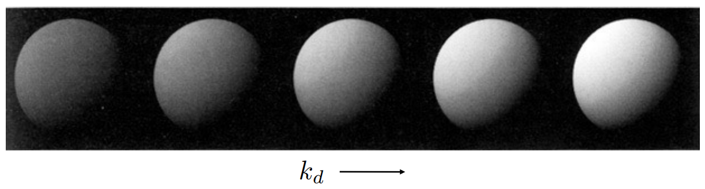
高光(Specular)
当观测方向和光反射方向一致（或者说接近）时，能观测到高光。
这里不考虑漫反射，只谈镜面反射。
那么如何定义“接近”呢？假设反射光方向为 \(\mathbf{R}\)，则 \(\theta{\mathbf{R},\mathbf{v}}\) 越小，表示越接近。但是 \(\mathbf{R}\) 比较难求，Blinn-Phong 模型改为求解半程向量 \(\mathbf{h}\) 与法线 \(\mathbf{n}\) 之间的夹角 \(\alpha\)。所谓半程向量，其实就是 \(\mathbf{v}\) 与 \(\mathbf{l}\) 的角平分线，有 \(\displaystyle \mathbf{h}=\frac{\mathbf{v}+\mathbf{l}}{||\mathbf{v}+\mathbf{l}||}\) 。
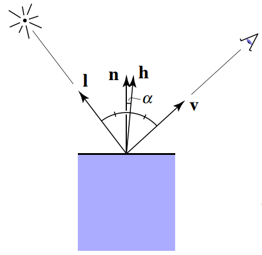
基于以上讨论，Blinn-Phong 模型给出如下的高光项公式：
\[ L_s = k_s\frac{I}{r^2}\max{(0, \mathbf{n}·\mathbf{h})}^p \]
其中
- \(L_s\) 为高光项光强；
- \(k_d\) 为高光项系数，决定观测到的高光明暗程度；
🙋♂️ 之所以有一个指数 \(p\)，是因为需要对“接近程度”设置一个阈值，当 \(p=1\) 时，即便 \(\mathbf{h}\) 与 \(\mathbf{n}\) 夹角达到了 45°，此时我们认为已经是相当偏离了，但余弦值为 \(\sqrt{2}/2\approx 0.7\)，还是能观测到比较明显的高光，这完全不符合我们的预期吧！
所以需要加入指数 \(p\) 进行控制，使得夹角增大时，\((\cos{\alpha})^p\) 能够快速衰减，比如下图
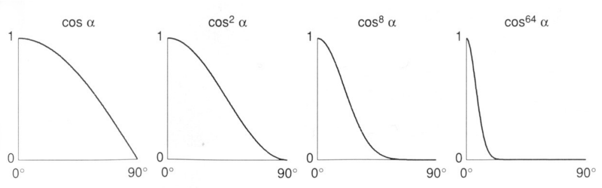
控制变量法得到的结果大概是下面这样（加入漫反射项）：
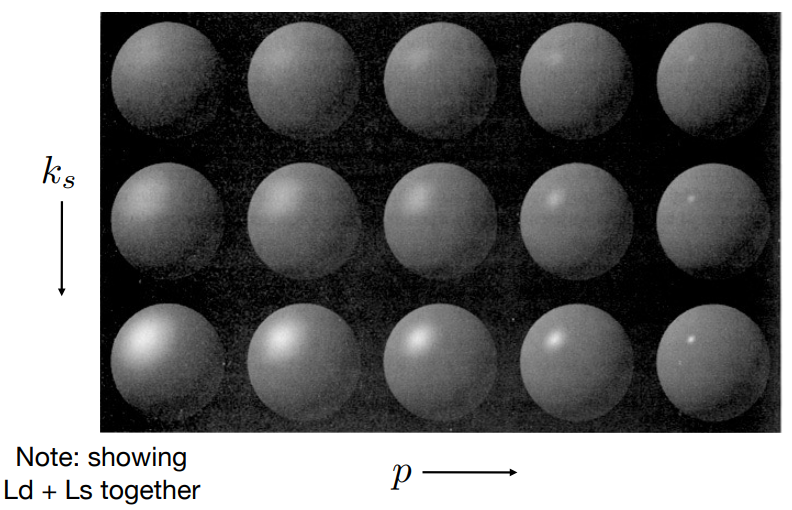
环境光照(Ambient)
虽然有些点因为遮挡等因素，不会接收点光源的直射光，但是存在来自四面八方的、反射自其它物体表面的光，这就是环境光(Ambient)。
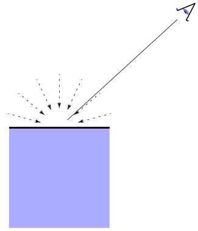
Blinn-Phong 模型给出的环境光项公式很简单：
\[ L_a = k_aI_a \]
其中
- \(L_a\) 为环境光强；
- \(k_a\) 为环境光系数；
- \(I_a\) 为光强，且假设任何一个点接收到来自环境的光强永远都是相同的；
不难发现，该模型的环境光强和 \(\mathbf{l}, \mathbf{n}, \mathbf{v}\) 无关，是一个常数，保证了没有一个地方完全是黑的。事实上不是这么一回事，正如我之前说的，Blinn-Phong 只是一个简单的模型，如果要对环境光做精确求值，需要运用到全局光照的知识。
总结
Blinn-Phong 模型下，我们最终能观测到的光强是以上三大项之和，即
\[ L = L_a+L_d+L_s = k_aI_a + k_d\frac{I}{r^2}\max{(0, \mathbf{n},\mathbf{l})}+k_s\frac{I}{r^2}\max{(0, \mathbf{n}·\mathbf{h})}^p \]
下面是一个简单的示例
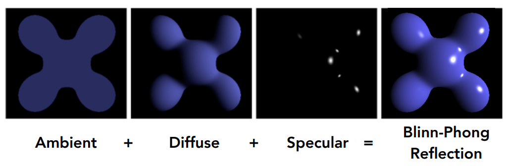
❗ 再次强调，Blinn-Phong 只是一个简单的模型，不具备物理真实性，没有太大的现实借鉴意义。
着色频率(Shading Frequency)
选择着色频率，本质上是“如何选择着色点”的问题。下面的讨论中，我们认为物体表面由若干三角形的平面组成。
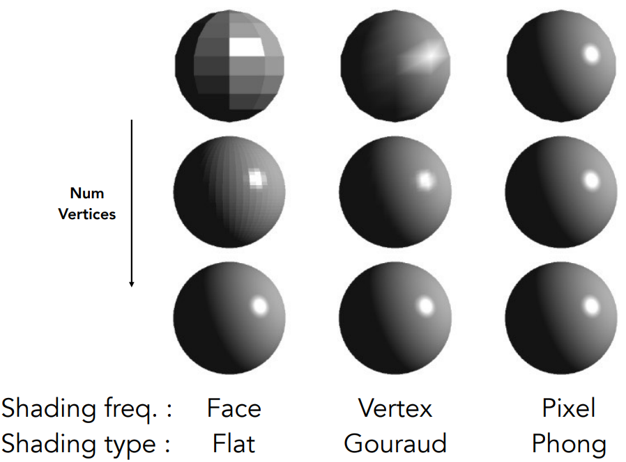
Flat Shading
将着色应用到整个三角形上。对于一个三角形，我们只需对任意两条边作叉乘，即可求得法线，最后对三角形内部所有点作同样的着色处理。缺点是不够平滑。
Gouraud Shading
将着色应用到顶点上。对于物体表面任意一个顶点，其相邻的所有三角形为 \(T_1, T_2, \dots\)，这些三角形面积为 \(S_1, S_2, \dots\)，法线为 \(\mathbf{n}_1, \mathbf{n}_2, \dots\)，那么此顶点为着色点对应的法线为
\[ \mathbf{n} = \frac{S_1\mathbf{n}_1 + S_2\mathbf{n}_2 + \dots}{S_1 + S_2 + \dots} \]
本质上是对所有法线作一个加权平均，权值为其面积，故面积越大的三角形，影响/贡献越大。
对于一个三角形，其三个顶点的着色已知，那么三角形内部应用插值即可。缺点是一旦某个三角形过大，着色效果就会不明显。
Phong Shading
将着色应用到像素上。首先对于三角形的每个顶点求出各自的法线，在三角形内部每一个像素上都插值出一个法线方向，对每一个像素进行一次着色，就会得到一个相对比较好的效果。
🤔 注意和 Blinn-Phong 区分。虽然都是同一个人发明的。
总结
根据一开始放的图，在顶点数较少，即模型比较简单时，Phong 的效果无疑是最好的，但也要一定的开销。而当顶点数增大，模型逐渐复杂时，即便用相对简单的 Flat Shading 也能得到一个比较好的效果，因为此时一个平面的大小可能已经接近像素大小了。
实时渲染管线(Real-time Rendering PipeLine)
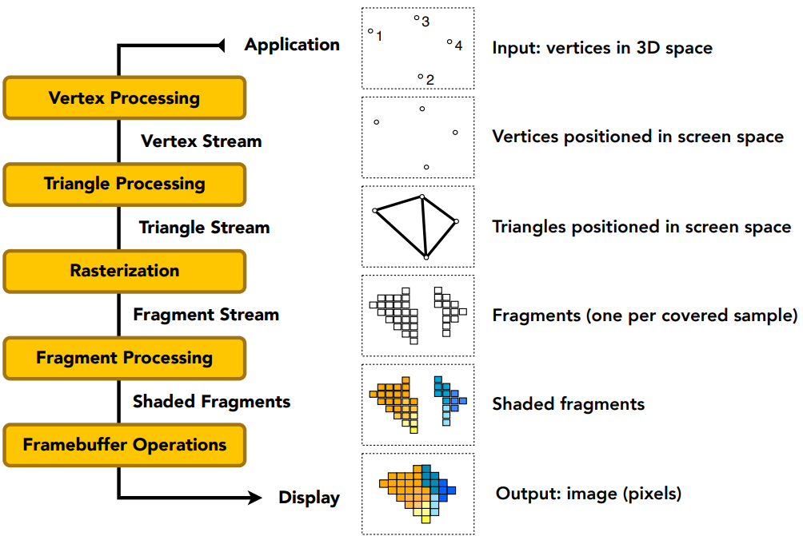
- 输入空间中的若干点；
- 将这些点投影到屏幕上，定义连接关系，生成相应三角形；
- 光栅化，形成不同的离散的片元(fragment)；
- 考虑可见性与着色频率，将不同的片元进行着色；
- 输出到显示器；
以上就是从三维场景到最后渲染出二维图片的基本操作，这些都是已经在 GPU 里写好了的。
🙋♂️ 提问：为什么在管线中是先把三维空间中的点投影到屏幕上去，然后再把它连成三角形呢？
定义空间物体时，首先定义顶点，再进行若干次定义由哪三个顶点构成小平面，这两步是将直接定义所有的三角形进行拆分，本质上是一样的，且三维空间投影到二维屏幕时，点与点之间的连接关系是不变的，所以我们只要对顶点进行操作就行。
纹理映射(Texture Mapping)
纹理映射解决了这样一个问题：给定三角形，我们希望观察到的结果为，三角形内部填充了某一张图片。
前面提到，对于一个表面，我们能够观察到不同颜色以及不同明暗程度，实际上是这个物体表面的属性发挥了作用——吸收一部分光，反射剩下的部分。我们能够看到物体表面仿佛填充了一张图片，本质上是这个物体表面的不同点具有不同的属性，这才是决定了不同观测结果的重要因素。
所以纹理映射的根本作用，就是定义物体表面属性。
那么如何定义呢？对于任意一个三维物体，其表面都可以通过某种方式转变成大小为 \(1\times 1\) 的二维图像，那么只要我们得到任意一张图，就可以通过逆操作将其“贴”到三维物体上，这就是赋予纹理的过程。只要将三维物体表面的所有三角形平面，都在这个二维图像找到一一对应关系，那么我们就可以把“定义三维物体表面属性”简化为“定义二维图像表面属性”了。
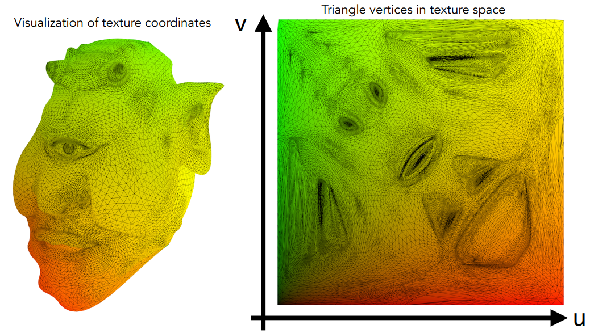
假设这种映射关系已经找到了。不难发现，任意一个三角形的顶点，在二维纹理图像 \(\mathbf{uv}\) 上都有对应的坐标，所以顶点处的纹理很好计算。那如何计算三角形内部任何一个点的纹理坐标呢？这就又涉及到插值了，即让纹理在三角形内部作平滑过渡。
同时我们希望对于多个相邻物体赋予同一纹理时（比如草坪，以一个平方为单位赋予纹理），我们希望两块纹理之间能够无缝衔接（这种纹理称为 tilable texture）。这就需要一个好的纹理设计，通常使用 wang tiled 算法。
插值(Interpolation)
之前我们提到过很多次“插值”的概念，在这里对其进行比较详细的阐述。插值的意义在于，如果已知三角形的三个顶点的值，那么通过插值的方法可以得到三角形内任何一点的值，并且任意两点之间的值是平滑过渡的。下面主要了解一种名为“重心坐标”的插值方法。
重心坐标(Barycentric Coordinates)
根据高中知识，对于二维平面上的三角形而言，其重心定义为三条中线的交点。重心有一些重要的性质，比如与三角形顶点的连线将三角形面积三等分，平面直角坐标系中重心的坐标等于顶点坐标的算术平均等。第二条性质用数学的方法可以表示为
\[ P_{x,y} = \frac{1}{3}A_{x,y}+\frac{1}{3}B_{x,y}+\frac{1}{3}C_{x,y} \]
其中 \(P\) 为 \(\triangle{ABC}\) 的重心。
再次根据高中知识，线段 \(AB\) 上的一点 \(Q\) 的坐标可以表示为 \(Q_{x,y}=\alpha A_{x,y}+(1-\alpha)B_{x,y}\)。
那么对于 \(\triangle{ABC}\) 而言，我们完全可以认为其内部一点是 \(AB\) 上某一点和 \(C\) 所成线段上的点，是否也可以利用上面这个性质呢？答案是：可以！
事实上三角形内部任何一点 \(Q\) 的坐标都可以表示成 \(Q_{x,y} = \alpha A_{x,y}+\beta B_{x,y}+\gamma C_{x,y}\) 的形式，其中 \(\alpha+\beta+\gamma=1\)。只不过重心是 \(\alpha=\beta=\gamma=1/3\) 时的特殊情况。
简单的推导
取 \(\triangle{ABC}\) 内部任意一点 \(P\)，连接 \(CP\) 并延长交 \(AB\) 于点 \(Q\)。易得 \(Q_{x,y} = \lambda A_{x,y} + (1-\lambda) B_{x,y}\)，那么有
\[ \begin{aligned} P_{x,y} &= \gamma C_{x,y} + (1-\gamma) P_{x,y} \\ &= \gamma C_{x,y} + (1-\gamma)\lambda A_{x,y} + (1-\gamma)(1-\lambda) B_{x,y} \end{aligned} \]
此时令 \(\alpha=(1-\gamma)\lambda, \beta=(1-\gamma)(1-\lambda)\) 即得结果，并且不难发现 \(\alpha+\beta = 1-\gamma\)
我们称 \((\alpha,\beta,\gamma)\) 为重心坐标（注意区别于重心的坐标）。
现在问题来了，对于三角形内一个点，怎么求对应的重心坐标呢？答案如下图所示，证明就不证了。
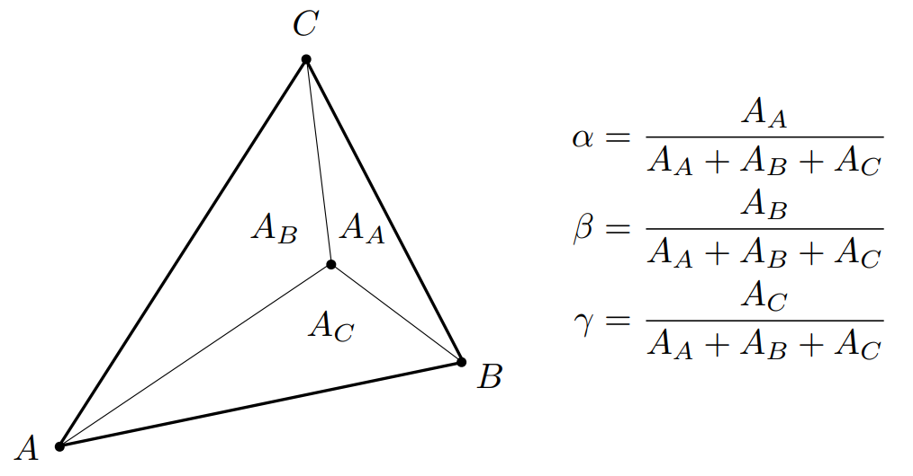
现在我们可以利用这三个系数进行插值了。已知三个顶点的“值” \(V_A, V_B, V_C\)，利用重心坐标，内部任意一点的“值”为
\[ V = \alpha V_A + \beta V_B + \gamma V_C \]
这里的“值”既可以是 Phong Shading 的法线，也可以是纹理值。
要注意的是，三维空间的点 \(P\) 投影到二维屏幕上成为 \(P'\) 后，\((\alpha,\beta,\gamma)_P\neq (\alpha,\beta,\gamma)_{P'}\)。所以想要对三维空间的属性进行插值，就必须先在三维空间内做，再对应到二维结果上去。
纹理映射中的应用
现在我们可以计算三角形内部任一点的纹理坐标 \(\mathbf{u}\mathbf{v}\) 了，具体做法是：在三维空间中，先求出重心坐标 \((\alpha,\beta,\gamma)\)，再利用三个顶点的纹理坐标进行插值计算 \(\mathbf{u}\mathbf{v} = \alpha(\mathbf{u}\mathbf{v}_A)+\beta(\mathbf{u}\mathbf{v}_B)+\gamma(\mathbf{u}\mathbf{v}_C)\)。得到结果后，就可以直接去二维纹理图上找到对应的纹理值，应用即可。
双线性插值(Bilinear Interpolation)
对于一个给定的纹理，其上的纹理元素(Texel, Texture Element)数量是固定的。在纹理比较小的情况下，比如我们要将一张 512*512 的纹理应用到整个 4k 屏幕上，就必然导致屏幕的多个像素，对同一个 Texel 进行采样。有的像素点可能对应的纹理坐标没有落到纹理中心，比如下面这样
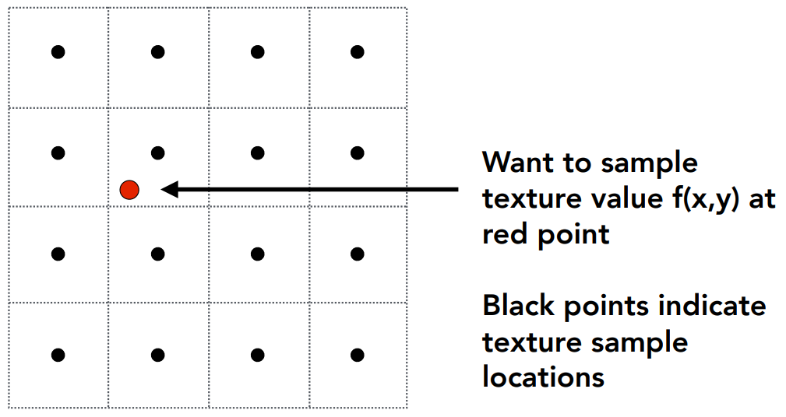
一种简单的方法是就近法(Nearest)，就是找最近的那个 Texel，那么会使得多个像素赋予同一个纹理值，最后得到的结果就会呈现颗粒状，两个像素之间有明显的界限，如下面最左边那张图。
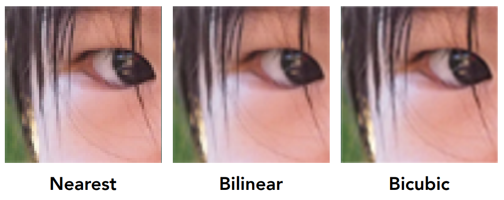
我们发现中间的 Bilinear 方法效果更好，那么它为什么会这么好呢？是因为 Bilinear 不是找最近的一个，而是根据最近的四个 Texel 的纹理值作两次线性插值，就会得到一个比较好的效果，同时开销也不会非常大。

而最右侧的 Bicubic 是找最近的十六个点，效果当然会更好，但同样开销也更大了。
mipmap 与三线性插值(Trilinear Interpolation)
上面讨论了纹理过小的情况，还算比较简单。那么纹理如果过大呢？比如在一个屏幕内有一个视角很大、场景层次很丰富的世界场景，远山所占的屏幕内容很小，但是纹理贴图却很大，此时会转变为同一个像素点对多个 Texel 进行采样。根据之前的讨论，这时数据频率远大于采样频率，就会导致图像失真，出现摩尔纹等现象。
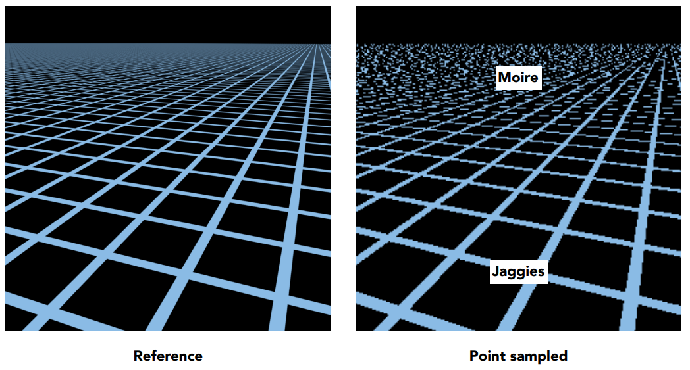
我们可以用 MSAA 的方法，在一个像素点内用更多的采样点，取平均值就好了，效果当然会不错，但是开销也会非常大。有没有一种更好的方法，即我们能不能在采样前预先计算好平均值，这样就不需要在采样的时候作重复计算呢？Mipmap(Multum in parvo map) 来了。
Mipmap 的原理很简单，对于一个纹理图，不断将其分辨率缩放一半，每缩放一次，将结果作为更高的 level。\(i\) 层对应大小为 \(2^i\) 的纹理区域。之后只需要求出采样的纹理面积/边长，在相应 level 的纹理图中根据 \(\mathbf{u}\mathbf{v}\) 取值就行。
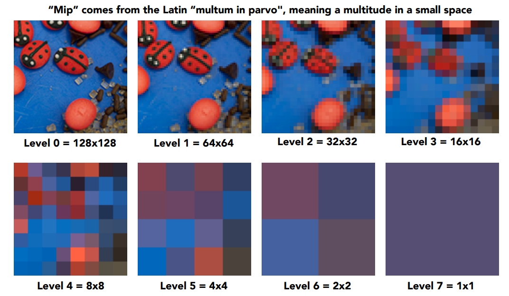
对于屏幕上的一个像素点 \(P\)，我们可以找其相邻的四个像素点，将这五个点分别在纹理空间中找到对应的纹理坐标，然后求中心点 \(P_{tex}\) 到另外四个点距离的最大值 \(L\)，就可以近似认为该像素点所采样的纹理区域是一个边长为 \(L\) 的正方形。说明该像素点对应的纹理值要去 \(\log_2{L}\) 层取。
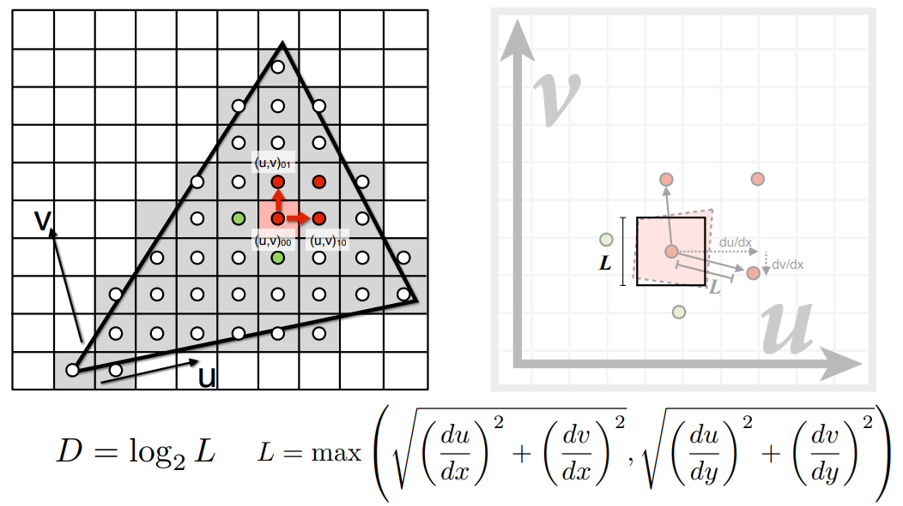
这里的 \(\log_2{L}\) 如果是一个浮点数，就不能直接使用了，我们总不能去 1.7 层找吧！如果进行四舍五入那就又陷入就近法的误区了。参考之前的做法，我们可以找到 \(D=\lfloor\log_2{L}\rfloor\) 层和 \(D+1=\lceil\log_2{L}\rceil\) 层的 bilinear 结果，然后再次进行线性插值。实际上就是 trilinear 了。
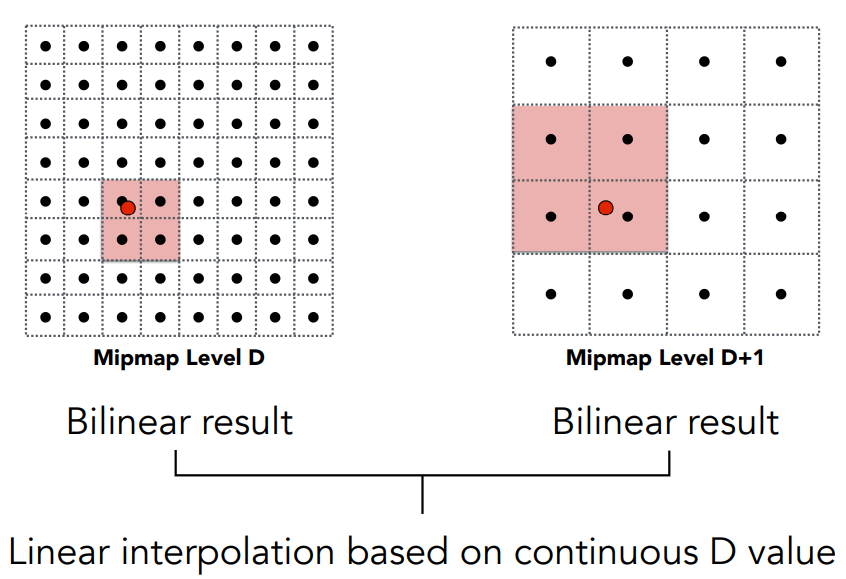
三线性 + mipmap 虽然能处理一些小像素采样大纹理的问题，但仅能对正方形进行近似，如果一个像素点采样的纹理区域是不规则图形，比如比较斜的平行四边形，此时用正方形对其进行近似就会出现 OverBlur 的问题。
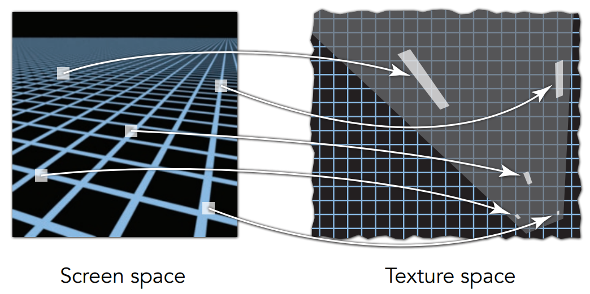
有一些替代方案，比如各向异性过滤(Anisotropic Filtering)可以用矩形进行近似，但并没有解决上面提到的问题。
EWA filtering 可以将不规则形状拆分为若干圆形，每次查询其中一个圆，分多次查询来近似。虽然能够比较好的进行近似，但“多次查询”已经暴露了其开销过大的缺陷。
纹理的其他应用
对于现代 GPU 而言，所谓纹理，其实就是一块内存(memory)，并且可以对其进行范围查询/过滤(range query/filtering)，所以纹理其实是一个比较广义的概念，并不局限于“图片”，可以表示非常多的东西。
环境贴图(Environment Mapping)
我们可以用纹理来描述环境光，再去渲染物体，这样就代替了点光源。此时我们可以假设环境光都是来自无穷远处，光强和距离无关，只记录方向信息，也就是说只要方向相同，环境光强就是一致的。比如下图，左图描述了在房间里从四面八方看到的光，用左图去渲染一个茶壶（右图），我们就能观察到茶壶被环境光所照亮，并反射来自四面八方的光。
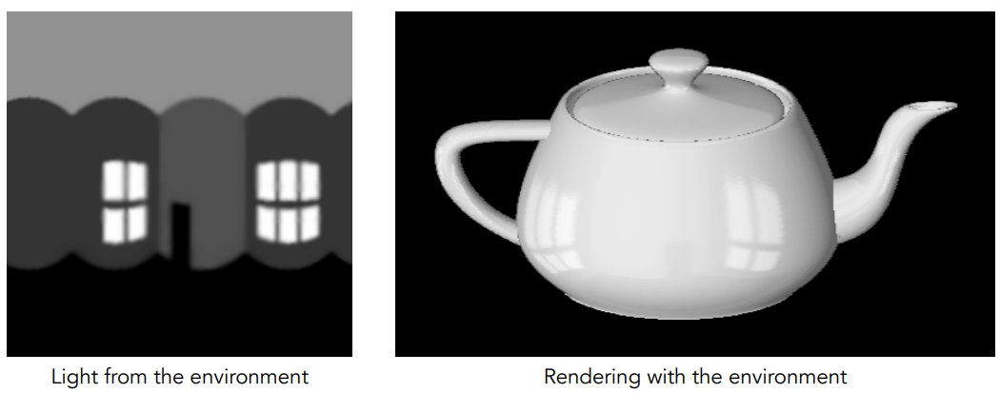
这是一个经典模型，名为犹他茶壶(Ultra teapot)
那么如何描述呢？
第一种做法是存储在球面上，但因为不是一个均匀的描述，会在靠近极点的地方出现扭曲。
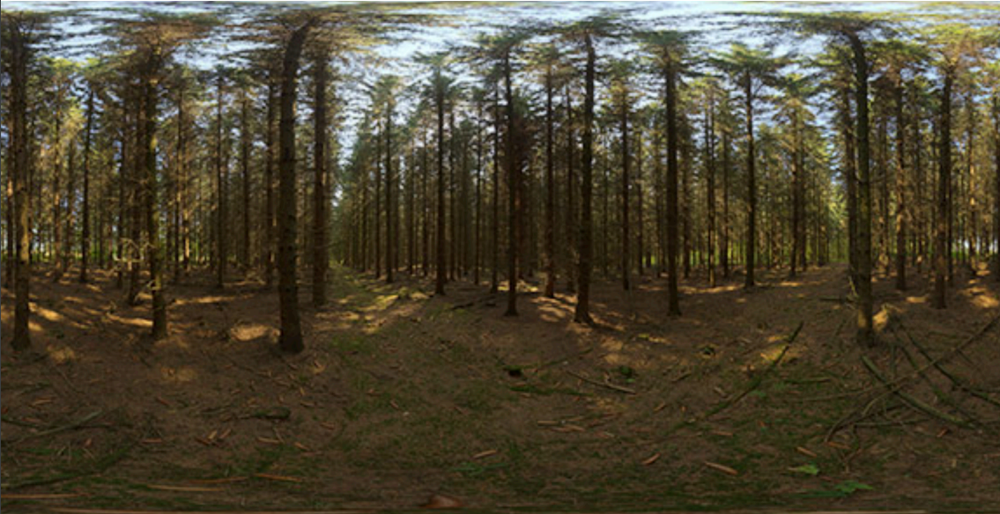
第二种做法是，假设上面的球有一个立方体状的包围盒，那原来记录在球面上的环境光信息，会沿着与球心的延长线打在盒面上，而不会有差异。也就是可以将环境光信息存储在立方体表面上，这样展开就会得到下图：
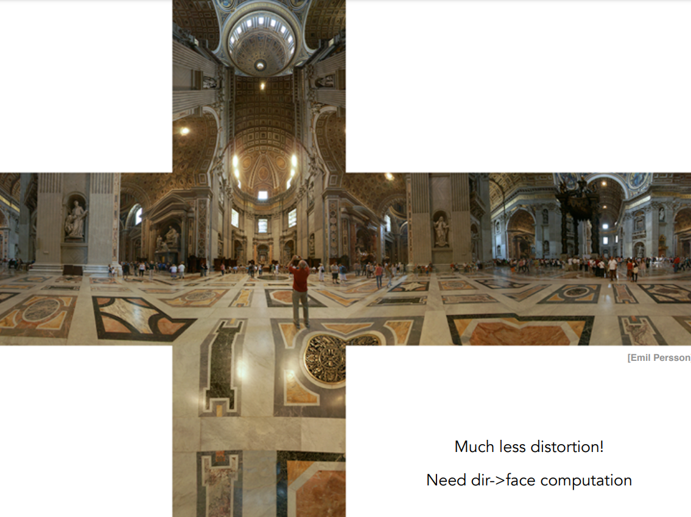
凹凸贴图(Bump Mapping)
纹理甚至可以定义物体表面某个点的“相对高度”，也就是在原来物体基础上定义凸起和凹陷的程度。这样就可以在不修改几何模型的前提下影响物体表面的着色。如下图，定义了相对高度后，求得的法线就会随之发生变化，那 Shading 的结果就会发生变化，就会看到不同的明暗对比。
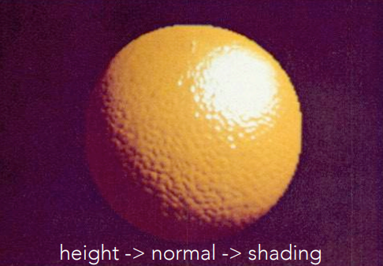
如果想表示球上凹凸不平的复杂几何，那就要用更多的三角形了。
法线的求法也很简单，只需要在纹理空间中求出该点在 \(\mathbf{u}, \mathbf{v}\) 两个方向上的梯度，那就得到了切线，通过切线就能简单地得到法线了。
位移贴图(Displacement mapping)
凹凸贴图本质上没有改变物体几何，而是用了视错觉原理，欺骗人的眼球，给人一种凹凸不平的错觉。
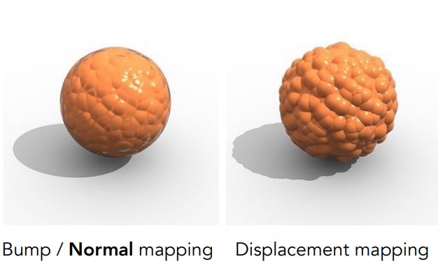
而位移贴图实际上会修改物体几何，即改变了三角形顶点的位置。但如果一个三角形比较大，就无法改变三角形内部还有一些需要改变的位置。也就是说三角形要足够细，细到三角形顶点之间的间隔要比纹理定义的频率还要高，使得模型能够跟得上所定义的纹理的变化速度。
有一种解决方案是，开始先用比较粗糙（三角形少）的模型，在应用位移贴图的过程中检测一下是否应该把三角形变得更细，如果需要，就将三角形拆开成很多小三角形，再继续做位移贴图。
三维纹理
事实上纹理没必要限制在二维，也可以是三维的。像下图，如果将这个球砍一半，我们希望可以看到它内部的情况，也就是说需要定义空间中任意一个点的纹理值。而实际上没有真的生成纹理的图，而是定义了一个定义在三维空间中的噪声的函数，所以在空间中任何一个点，它都有一个解析式可以算出来噪声的值。像这里是柏林噪声(Perlin noise)
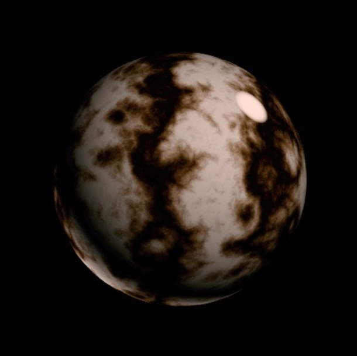
几何(Geometry)
隐式表示(Implicit)
隐式表示方法不会指明具体的点在哪，而是给出这些点满足的关系。
代数曲面(Algebraic Surfaces)
根据单位球面满足关系 \(x^2+y^2+z^2=1\)，不妨进行推广，任意物体表面都可以由这样一个数学公式进行表达：
\[ f(x,y,z)=0 \]
已知任意一个 \(x,y,z\)，我们可以计算 \(f(x,y,z)\)，进而判断 \((x,y,z)\) 在物体内部（<0）、表面上（=0）还是在物体外部（>0）。
构造实体几何(CSG, Constructive Solid Geometry)
通过对基本几何的基本布尔运算（并集、交集、差集），来定义新的几何。
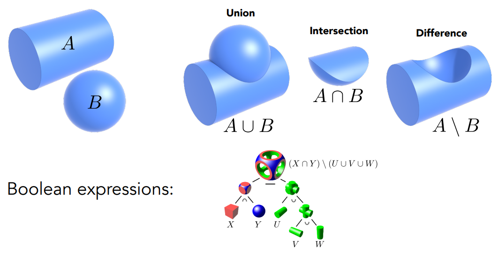
符号距离函数(Signed Distance Functions)
对于任何一个几何，都不直接描述它的表面，而是描述任何一个点到这个表面的最近距离，这就是符号距离函数（结果为正则认为在物体表面的外面，负的则在物体内部）。
计算出两个物体的符号距离函数 \(SDF_1, SDF_2\) 后，就可以将两者做一个 blending，得到一个新的符号距离函数 \(SDF\)，然后再恢复成原来的物体（所有满足 \(SDF(x,y,z) = 0\) 的点构成的集合就是物体的表面），就可以得到如下的变换。
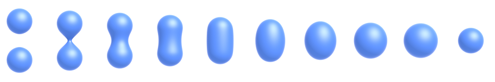
水平集(Level Set Methods)
这个方法的思路和距离函数其实完全一样，仅仅是函数的表述是写在格子上的，函数在不同的格子上有不同的值，只需要找出格子中值为 0 的点（可以通过双线性插值计算），就可以将函数试图描述的物体表面提取出来。
这和地理上的等高线的概念是一致的。
分形(Fractals)
分形是自相似的意思，也就是说自己的一个部分和它的整体长得非常像，和计算机科学中说的递归是一个道理。下图是一种叫 Romanesco 的西兰花。
这种类型的几何对于渲染和描述来说都是巨大的挑战，渲染时会引起强烈的走样
总结
隐式表示表述起来相对容易，同时支持点与物体表面位置关系的查询，且有利于求解光线与表面的交集。
缺点在于，很难描述复杂的几何结构。
显示表示(Explicit)
显示表示则是直接给出点的位置。
参数映射(Parameter Mapping)
比如定义了一个坐标系 \(\mathbf{u}, \mathbf{v}\)，对于给定的任意点 \((u,v)\)，都会映射到空间中的点 \((x,y,z)\) 中，这样只需要遍历一遍 \((u,v)\)，就可以得到所有的 \((x,y,z)\)。
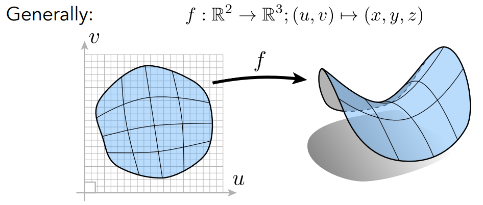
点云(Point Cloud)
我们不考虑物体是一个表面，而是由海量点组成。只要点足够密集，那么点与点之间的缝隙就可以忽略不计，理论上可以表示任何类型的几何体。
而如果点云密度很低，就很难绘制成物理实体，所以除了最原始扫描出来的数据，人们很少用点云。
多边形面(Polygon Mesh)
这是用的最广泛的，也是之前一直在聊的，就是将物体表面视为由若干三角形组成。这就会涉及到一个问题，就是三角形之间的连接关系，这是点云不会遇到的。
有一种特殊文件格式，The Wavefront Object File(.obj) Format，对于该格式的文件，一个文件存储一个物体或场景，把空间中的一堆顶点、法线和纹理坐标分开来表示，然后在一块把他们组织起来形成模型。如下图，描述的是一个立方体。
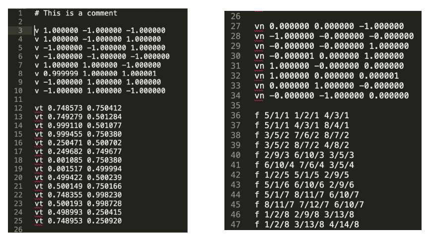
v：描述顶点信息；vt：描述纹理坐标；vn：描述每个面的法线方向；f：描述哪三个点构成三角形，格式为三角形顶点/纹理坐标/法线坐标；
曲线(Curves)
贝塞尔曲线(Bézier Curve)
贝塞尔曲线由一系列控制点 \(\mathbf{b}_0, \mathbf{b}_1, \dots, \mathbf{b}_n\) 定义。具体而言，我们需要将控制点顺序连接（这样会有 \(n-1\) 条边），在每条边上我们找到 \(t\) 分点，得到一组新的点 \(\mathbf{b}^1_0, \mathbf{b}^1_1, \dots, \mathbf{b}^1_{n-1}\)。重复上述过程，直至生成唯一一个点 \(\mathbf{b}^n_0\)。当 \(t\in[0,1]\) 时，这个点就表示了贝塞尔曲线的运动轨迹。
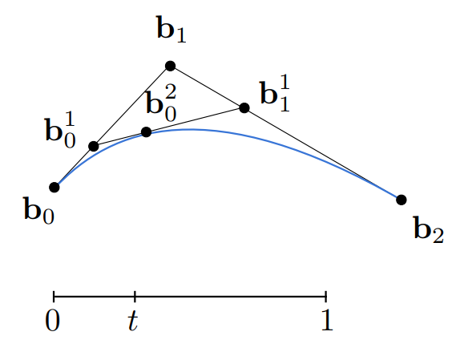
我们可以利用 \(\mathbf{b}^n_i = (1-t)\mathbf{b}^{n-1}_i + t\mathbf{b}^{n-1}_{i+1}\) 这一性质作金字塔式计算，不难得到这样一个结论
\[ \mathbf{b}^n(t) = \mathbf{b}^n_0(t) = \sum\limits_{i=0}^n\mathbf{b}_iB^n_i(t) \]
其中 \(B^n_i(t)=\left(\begin{matrix}n\\ i\end{matrix}\right)t^i(1-t)^{n-i}\)，即二项分布多项式（伯恩斯坦多项式）。
贝塞尔曲线具备以下性质：
- 过起点 \(\mathbf{b}_0\)（t=0）和终点 \(\mathbf{b}_n\)（t=1）；
- 在 \(n=4\) 时，曲线在起点和终点的切线满足：\(\mathbf{b}'(0)=3(\mathbf{b}_1-\mathbf{b}_0),\mathbf{b}'(1)=3(\mathbf{b}_3-\mathbf{b}_2)\)；
- 仿射相似性：对原始控制点作仿射变换后得到新控制点，再构造贝塞尔曲线 \(bc'\)，和直接对原始贝塞尔曲线 \(bc\) 作仿射变换所得到的结果是一样的。投影变换不行；
- 凸包性质：贝塞尔曲线一定在所有控制点形成的凸包（能够包围一系列给定的几何形体的最小的凸多边形）内。如果所有控制点共线，那么对应的贝塞尔曲线是起点与终点形成的线段；
🤷♂️ 当控制点数量过多时，得到的贝塞尔曲线并不一定是我们想要的，甚至很难控制。
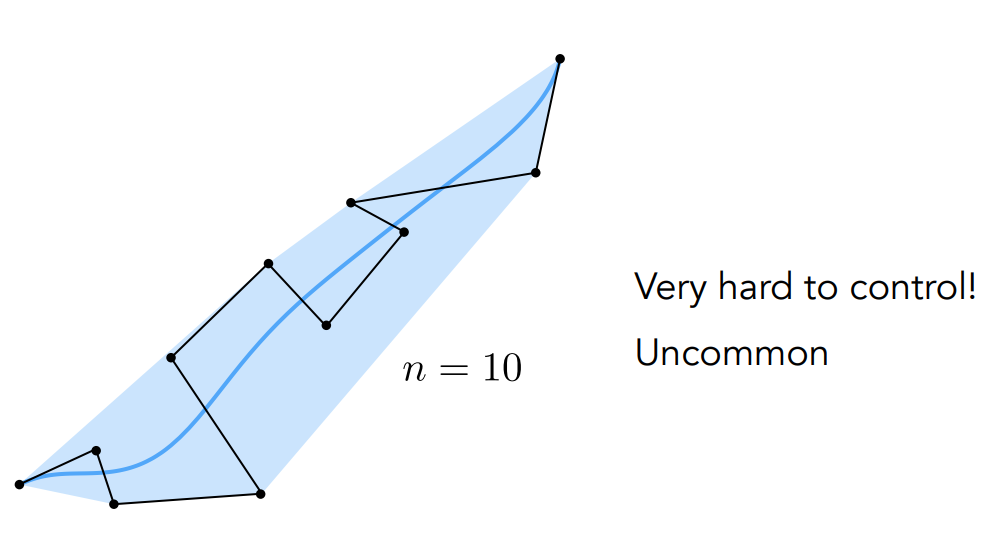
此时可以若干个控制点为一组分别绘制贝塞尔曲线，再首尾相连即可。一般取 4 个为一组，也就是 Piecewise cubic Bézier。这形成一种最简单的连续，是几何上的连续，一般称为 \(C^0\) 连续。
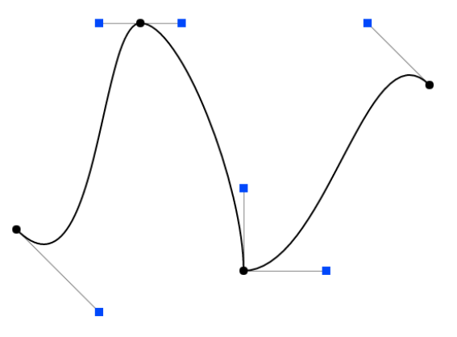
但为了使结果平滑过渡，我们需要利用性质 2，令分段点的左右切线相等。此时有三点共线，且分段点（中间的点）为线段中点，如下图所示。此时就称为 \(C^1\) 连续。
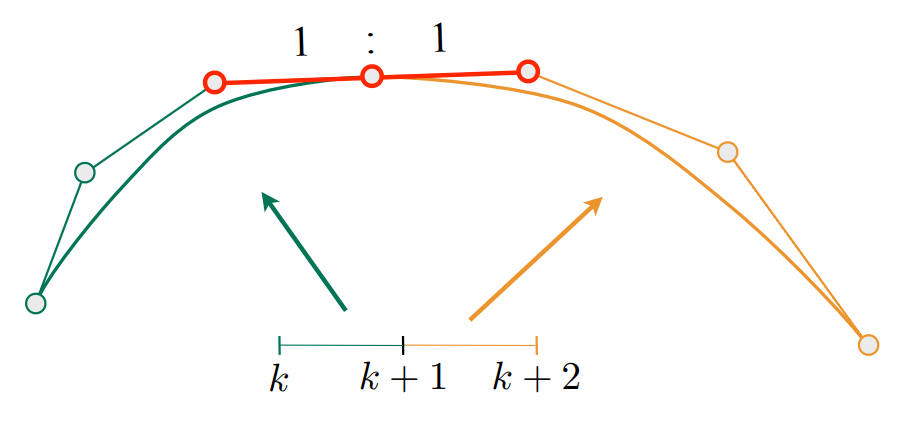
\(C^2\) 连续则要保证二阶导连续，更高阶的连续性同理。
曲面(Surfaces)
贝塞尔曲面(Bézier Surfaces)
贝塞尔曲面其实就是通过贝塞尔曲线得到的。对于一个用 4*4 个点控制的贝塞尔曲面而言，可以将其 4 个控制点为一组分为 4 组。
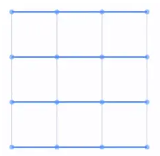
每一组控制点得到一条横向的贝塞尔曲线 \(bc_i\)，当 \(t\) 相同时，四条曲线上的点 \(bc_i(t)\) 四点共面，我们认为这四个点可以作为新的控制点，并绘制出一条纵向的贝塞尔曲线。
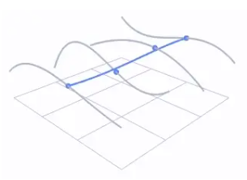
当 \(t\in[0,1]\) 时，横向贝塞尔曲线的这四个点会逐渐扫过空间，那么这四个点控制的贝塞尔曲线在扫的过程中也就形成了最终我们想要的贝塞尔曲面。
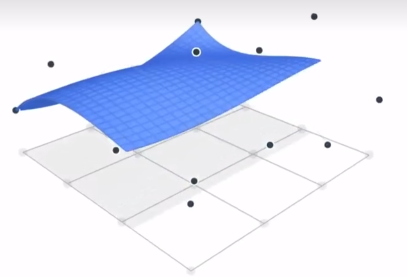
要找到贝塞尔曲面上任何一个点，根据上面的过程，需要两个不同的参数，在水平方向上找一个参数 \(t\)，找到 4 个点后，这 4 个点要连成一条曲线，还需要一个参数 \(t\)。所以需要用二维参数来控制，那不如管它叫 \(\mathbf{u}\mathbf{v}\) 好了🤣。
网格体操作(Mesh Operation)
有以下三种操作：
- 网格细分(Mesh Subdivision)：用更多的三角形得到更光滑的表面，如下面图 2 到图 3；
- 网格简化(Mesh Simplification)：用更少的三角形来节约存储，如下面图 2 到图 4；
- 网格正规化(Mesh Regularization)：尽可能将三角形转换/近似为正三角形，防止三角形出现特别尖长的情况，如下面图 2 到图 5；
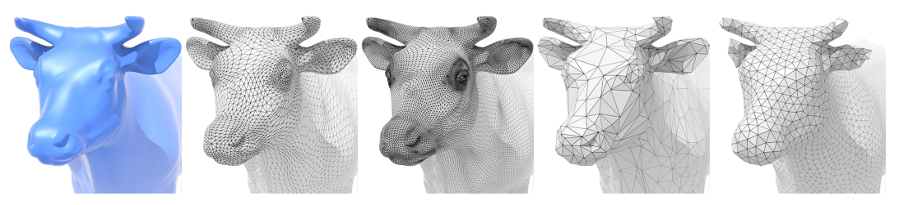